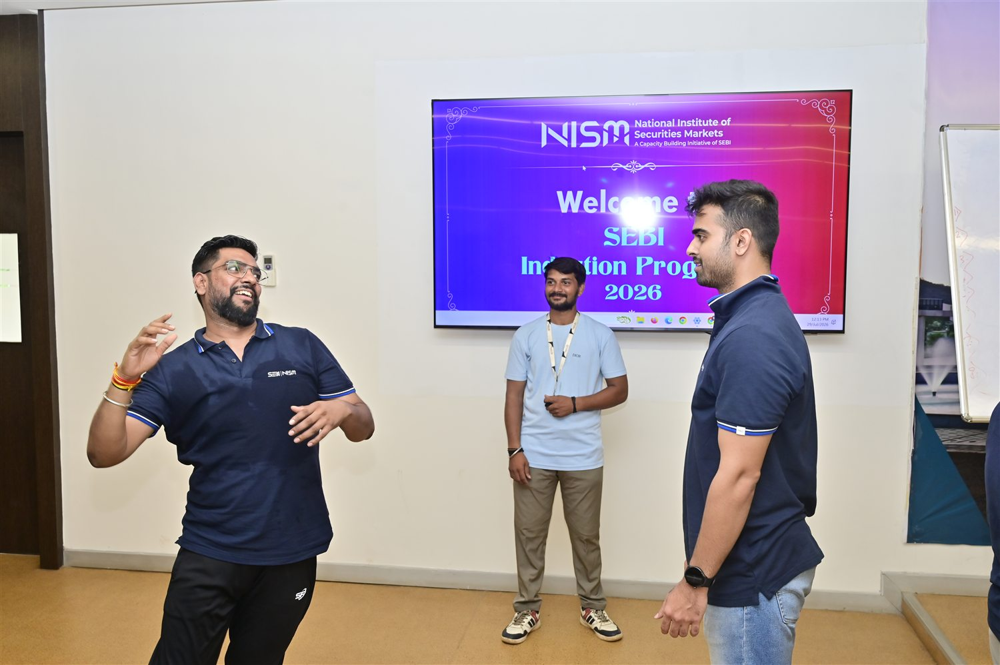

Albums / Beyond the classroom
Beyond the classroom
Team Building
Activities that turned a new batch into one team.
Inside this chapter
A place in our shared story.
Activities that turned a new batch into one team. This collection brings the photographs together so the batch can revisit the experience, frame by frame.
- Activities together
- Cooperation in action
- Building batch connections
From our yearbook
Familiar faces. Shared memories.


Another chapter awaits